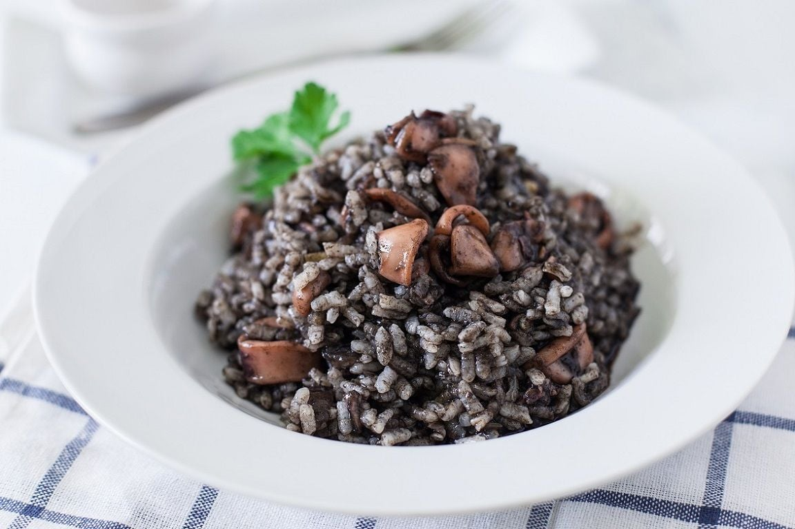

ARROZ NEGRO
- INGREDIENTES
- PASO A PASO
- RESULTADO FINAL
INGREDEINTES
- 200 mg de arroz bomba
- 1 Sepia
- 250 mg de gambas
- 100 mg de cebolla
- 2 tomates
- 2 dientes de ajo
- Pimiento verde
- 50g de caldo de pescado
- 100 ml Vino blanco
- 50 ml Aceite de oliva virgen extra
- 3 bolsas de tinta de sepia
PASO A PASO
- Picamos la cebolla, el pimiento, el tomate y el ajo en trozos muy finos. Por otro lado, pelamos las gambas y reservamos. Con las cabezas de las gambas preparamos un fumet para después preparar con el nuestro arroz. En una paella, ponemos un chorreón de aceite de oliva virgen extra, y cuando esté caliente salteamos la sepia previamente troceada durante cinco minutos.
- Añadimos la cebolla y el pimiento verde, removemos y dejamos que se hagan durante cinco minutos. Agregamos el ajo y las gambas, rehogamos unos minutos y por fin agregamos el tomate troceado. Salamos ligeramente y dejamos que se cocine todo durante cinco minutos. Retiramos las gambas y las reservamos para el final de la elaboración.
- Diluimos las tintas en un vasito con dos cucharadas de agua caliente y lo añadimos a la cazuela. Incorporamos el arroz y dejamos que se sofría sin dejar de remover durante dos minutos aproximadamente. Añadimos el vino blanco y dejamos que se evapore.
- Cubrimos el arroz con la mitad del caldo y dejamos que hierva, dejando que se cocine a fuego vivo durante diez minutos, momento en que añadiremos el resto del caldo, bajaremos el fuego y continuaremos la cocción a fuego medio durante otros siete minutos más.
RESLTADO FINAL
